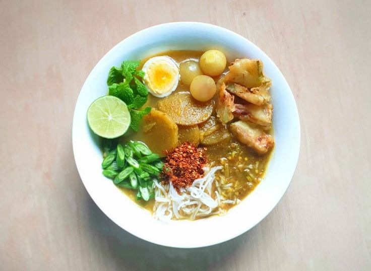
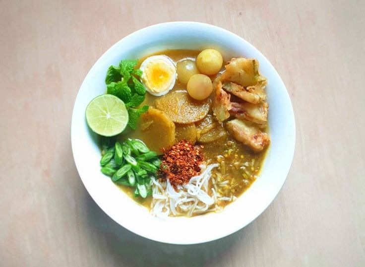

သမိုင်းနောက်ခံ
ပုဂံသည် မြန်မာနိုင်ငံ၏ ပထမဆုံးသော ဧကရာဇ်နိုင်ငံတော်ဖြစ်ခဲ့ရုံသာမက၊ ယနေ့ခေတ်တွင် ကမ္ဘာ့အမွေအနှစ်စာရင်းဝင် (UNESCO World Heritage Site) အဖြစ် ထင်ရှားကျော်ကြားသော နေရာတစ်ခုဖြစ်သည်။ ဧရာဝတီမြစ်ကမ်းဘေးရှိ စတုရန်းမိုင် (၄၀) ခန့်အတွင်း စေတီပုထိုးပေါင်း ထောင်ချီတည်ရှိနေခြင်းမှာ ကမ္ဘာပေါ်တွင် အခြားမည်သည့်နေရာတွင်မှ မရှိနိုင်သော ထူးခြားချက်ဖြစ်သည်။
ပုဂံခေတ် (အေဒီ ၉ ရာစုမှ ၁၃ ရာစု) သည် မြန်မာ့ဗိသုကာ၊ စာပေနှင့် ဘာသာရေး အထွန်းကားဆုံးအချိန်ဖြစ်သည်။ အနော်ရထာမင်းကြီးလက်ထက်တွင် ထေရဝါဒဗုဒ္ဓဘာသာကို စတင်လက်ခံခဲ့ပြီးနောက်၊ မင်းနှင့်ပြည်သူများက ကုသိုလ်တော်အဖြစ် ဘုရားပေါင်းများစွာကို တည်ထားခဲ့ကြသည်။ ယနေ့တိုင် ပုဂံမြေတွင် ဘုရားပုထိုးပေါင်း (၃,၈၀၀) ကျော်ကို လေ့လာနိုင်သည်။


 
